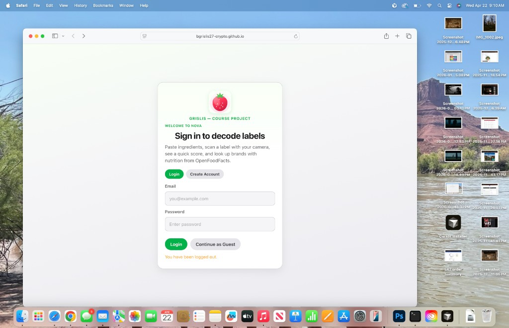
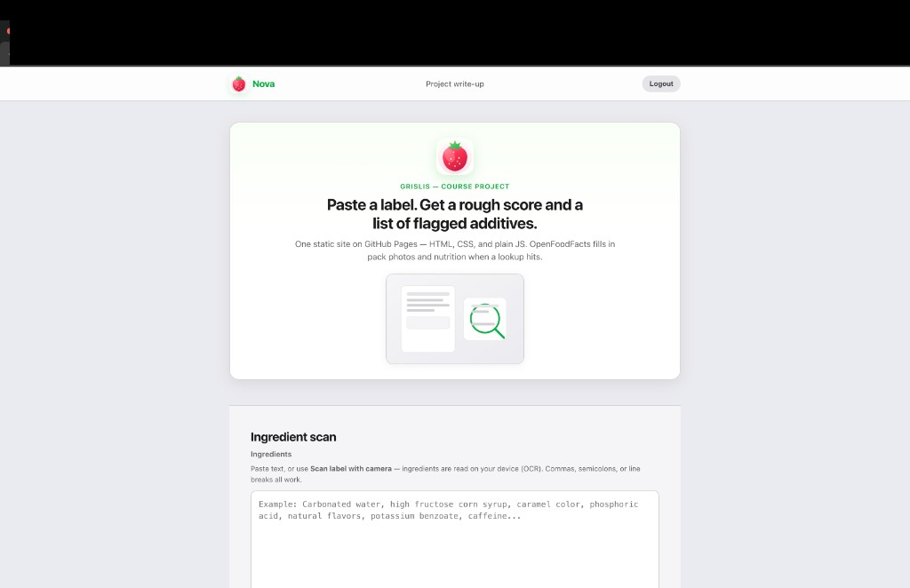
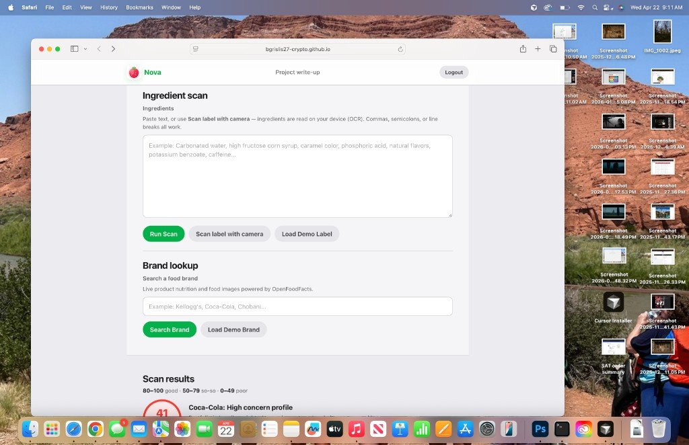

Paste junk from a label, get a number and some flags.
Nova is just HTML/CSS/JS in a folder. I skipped a bundler so I could chuck it on GitHub Pages and
not fight the toolchain. OpenFoodFacts is there for brand search: sometimes you get a pack photo and
macros, sometimes the API is weird. That’s fine for what this is.
Ingredient text is boring to read. The app is basically: string match against a list I typed in, then a
score that goes red/yellow/green so you don’t have to think too hard. The “processing” signal is kind of
fake (longer list = ding the score a bit). Not science, just something to wire up the UI around.
Paste scan
You paste commas / lines. It hunts additives, adds a penalty if the list is huge, then buckets the
final 0–100 number: green 80+, yellow 50–79, red under 50.
Brands
I kept a local list so autocomplete still works with WiFi off. With WiFi it tries OpenFoodFacts,
merges in a better row when the search JSON is thin, and shows a picture if one actually exists.
Stuff that works
No clever architecture. If it runs in Chrome/Safari on the due date, good enough.
Fake “scan”: green line runs over the textarea, waits a beat, dumps results below. Looks busy.
Brand box has typeahead from my hard-coded list. Keyboard stuff mostly works (I tested it a few times).
Login page is real-ish UI but the backend is localStorage. Guest
skips straight in. Good enough for the rubric.
Icons are SVGs I stole time on / tweaked. Product photos come from contributors on OFF, not from me.
What it actually looks like
Grabbed on my laptop from the Pages URL (Safari). Yes there’s a menu bar in some of them. Whatever.

Login screen (guest still works)

Main view with the big paste box

Kellogg’s search + the score blob underneath
How I built it
No React. No Vite. One big app.js plus the HTML. You can drag
index.html into a browser and most of it runs; OFF calls might
whine if you’re on file://.
Actually used
· HTML + CSS (a few variables, clamp on type)
· Plain fetch to OpenFoodFacts; I had to merge search + product-by-code to get images reliably
· localStorage fake accounts (passwords aren’t secure, obviously)
· SVGs: some hand-edited, a couple blocks in this write-up page I didn’t overthink
OFF data is crowd-sourced. The score is a toy for class, not something you should shop with.
Ugly wireframes
Inline SVGs I drew before the CSS looked decent. Scroll down for the real thing in an iframe.
Login-ish
…/index.html
Scan + fake results (yellow score)
…/index.html#results
80–100 ok 50–79 meh under 50 rough
Try it here
Iframe points at ./index.html. For class, make sure Pages is on
main / root or this goes blank.